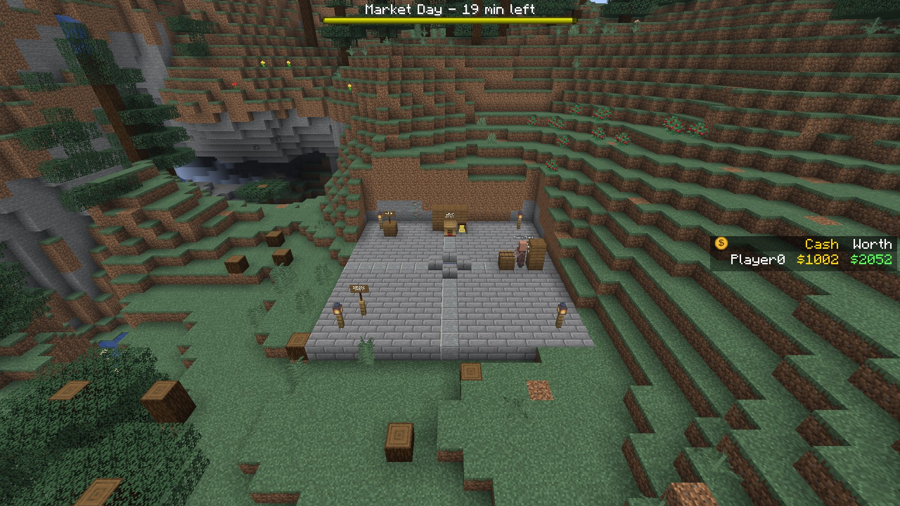
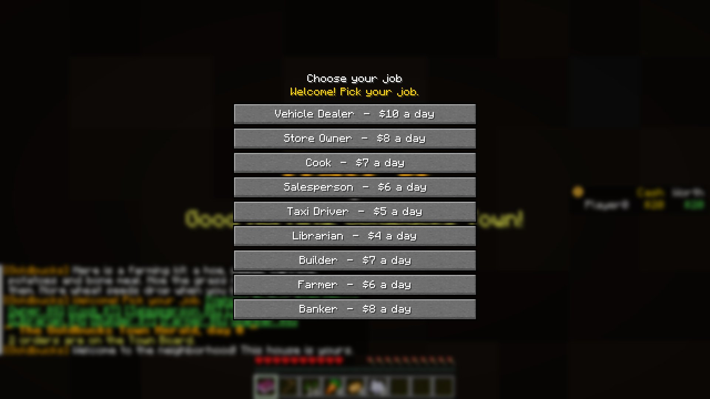
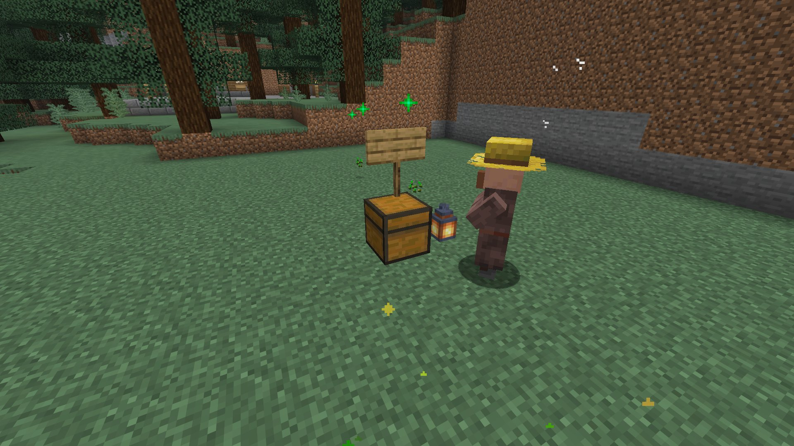
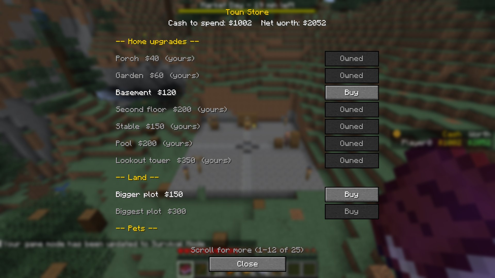
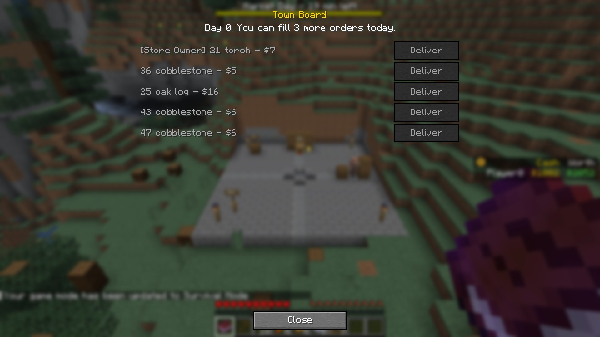
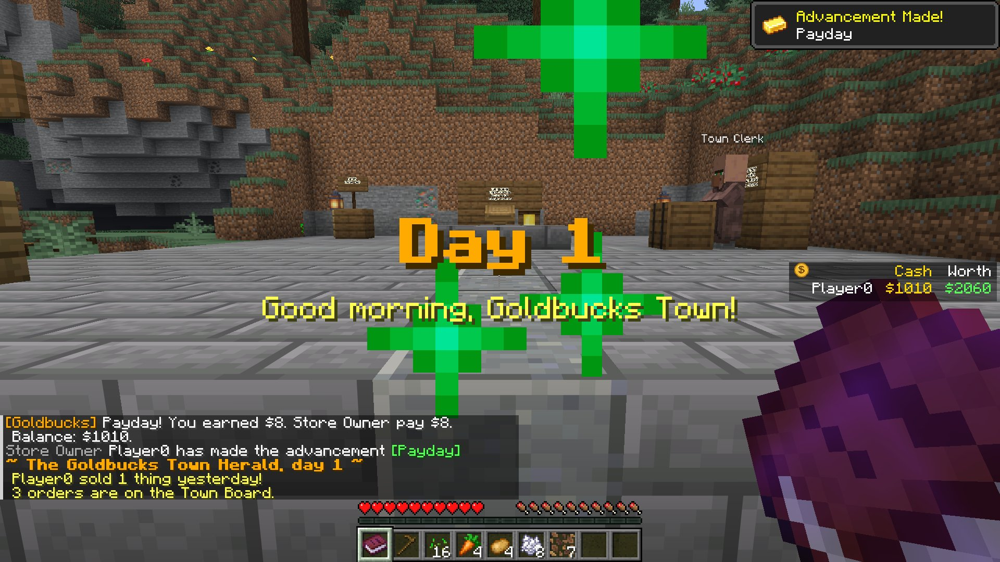
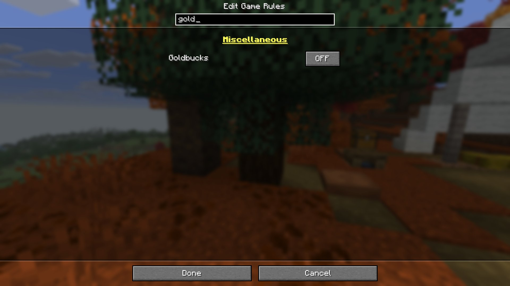

Nine jobs
Vehicle Dealer, Store Owner, Banker, Cook, Builder, Salesperson, Farmer, Taxi Driver and Librarian. Each has a daily task and its own pay.
Pick a job, open a shop, earn Goldbucks and build up your town. A jobs-and-money mod for playing Minecraft with family and friends.
Everyone gets a house, a job and $20. Do your job each Minecraft day to get paid, sell things from your own shop, fill orders on the Town Board and save up for upgrades. There is no way to win: the fun is in running a business and watching the side bar to see who is worth the most.
Goldbucks only runs in worlds where you switch it on. All your other worlds stay normal Minecraft.







Vehicle Dealer, Store Owner, Banker, Cook, Builder, Salesperson, Farmer, Taxi Driver and Librarian. Each has a daily task and its own pay.
Claim a plot, put a chest and a [Shop] sign on it, and set a price. Other players and townsfolk buy from you.
A Town Board of paid orders, a Town Clerk, a Taxi Stand and a lectern with the morning news.
House upgrades, a bigger plot, pets, a name colour, a shop banner, fireworks and adverts.
Work your job to become Skilled, Expert and Master, with better pay and a perk at each level. Achievements pay small rewards.
Run for Mayor on Election Day with a promise, and win votes. The Mayor sets the tax rate and declares a holiday.
Market Day every week, plus Fishing Season, Tourist Day, Treasure Hunt, Lost Pet and more.
Payday, savings at the bank, credit down to -$100, a weekly tax, and bought tools that wear out.
No monsters and no dying. Players gather and craft everything themselves.
gold, turn Goldbucks on. Or type /goldbucks on in a world you already have./host settings opens a screen with every number and switch. It checks your changes before saving.Goldbucks is off until you switch it on in a world. When creating a world, open More > Game Rules, search for gold and turn Goldbucks on. In a world you already have, the host types /goldbucks on. /goldbucks status says whether it is on.
Every computer needs the same version of Minecraft, Fabric API and Goldbucks. Download the newest Goldbucks on each one and remove any older Goldbucks jar from the mods folder.
Yes. The host types /host settings for pay, taxes, limits and switches. Item values, store items, orders and events are data files: copy them from the mod jar into a data pack in the world's datapacks folder, change them, and type /reload.
No. Goldbucks does nothing in a world unless it is switched on there. Switching it off with /goldbucks off keeps everyone's money and jobs in case you switch it back on.
It is made for Java Edition, with one player hosting a world opened to LAN. It is not tested on dedicated servers, and it does not work on Bedrock.
Each download comes from this project's releases on GitHub. Its SHA-256 checksum is shown above the download button and on the release page, so you can compare it with the file you got.